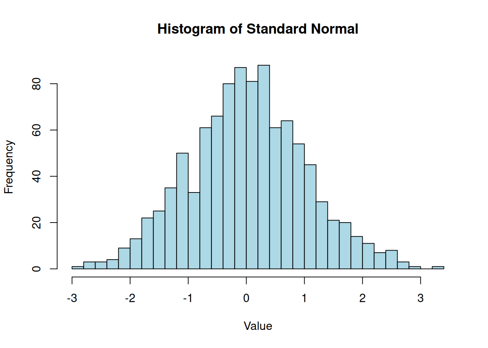
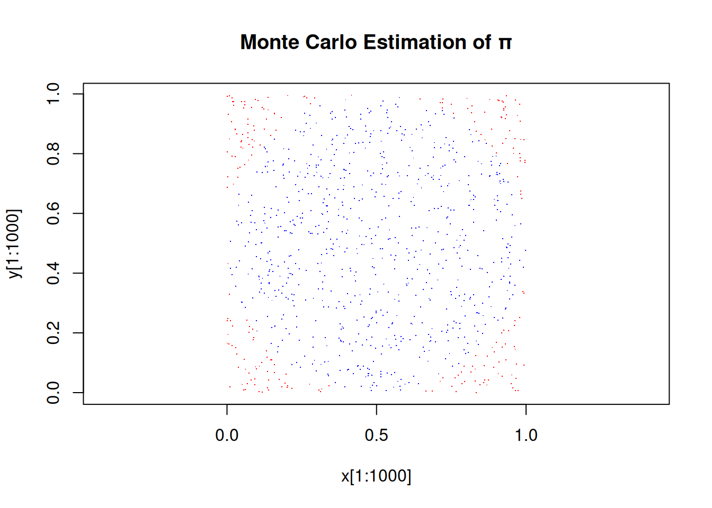

# Assign a value to a variable
x <- 5
x[1] 5# Alternative syntax
y = 10
y[1] 10Getting Started with R: Vectors, Matrices, and Basic Operations
After completing this chapter, you should be able to:
R is a programming language and software environment for statistical computing and graphics. It is widely used among statisticians and data miners for developing statistical software and data analysis.
This chapter covers material from the lecture slides: Advanced_Statistics_R_first.pdf
In R, we use <- (or =) for assignment:
# Assign a value to a variable
x <- 5
x[1] 5# Alternative syntax
y = 10
y[1] 10R has several basic data types:
3.14, -2.5)5L, -3L)"hello", 'world')TRUE, FALSE)# Examples of different types
num_var <- 3.14159
int_var <- 42L
char_var <- "Hello R"
log_var <- TRUE
# Check the type of a variable
class(num_var)[1] "numeric"class(int_var)[1] "integer"class(char_var)[1] "character"class(log_var)[1] "logical"Vectors are the most basic data structure in R. They are one-dimensional arrays that can hold numeric data, character data, or logical data.
Use the c() function to combine values into a vector:
# Create a numeric vector
v1 <- c(1, 2, 3, 4, 5)
v1[1] 1 2 3 4 5# Create a character vector
fruits <- c("apple", "banana", "cherry")
fruits[1] "apple" "banana" "cherry"# Create a logical vector
flags <- c(TRUE, FALSE, TRUE, TRUE)
flags[1] TRUE FALSE TRUE TRUE# Sequence of numbers
seq_1_to_10 <- 1:10
seq_1_to_10 [1] 1 2 3 4 5 6 7 8 9 10# Using seq() function for more control
seq(from = 0, to = 1, by = 0.1) [1] 0.0 0.1 0.2 0.3 0.4 0.5 0.6 0.7 0.8 0.9 1.0seq(from = 0, to = 10, length.out = 5)[1] 0.0 2.5 5.0 7.5 10.0R performs element-wise operations on vectors:
a <- c(1, 2, 3, 4, 5)
b <- c(10, 20, 30, 40, 50)
# Arithmetic operations
a + b # Element-wise addition[1] 11 22 33 44 55a - b # Element-wise subtraction[1] -9 -18 -27 -36 -45a * b # Element-wise multiplication[1] 10 40 90 160 250a / b # Element-wise division[1] 0.1 0.1 0.1 0.1 0.1a^2 # Each element squared[1] 1 4 9 16 25# Vector recycling (shorter vector is repeated)
c <- c(1, 2)
a + c # c is recycled: c(1, 2, 1, 2, 1)Warning in a + c: longer object length is not a multiple of shorter object
length[1] 2 4 4 6 6x <- c(3, 1, 4, 1, 5, 9, 2, 6)
# Basic statistics
length(x) # Number of elements[1] 8sum(x) # Sum of all elements[1] 31mean(x) # Arithmetic mean[1] 3.875median(x) # Median value[1] 3.5sd(x) # Standard deviation[1] 2.748376var(x) # Variance[1] 7.553571min(x) # Minimum value[1] 1max(x) # Maximum value[1] 9range(x) # Min and max[1] 1 9summary(x) # Summary statistics Min. 1st Qu. Median Mean 3rd Qu. Max.
1.000 1.750 3.500 3.875 5.250 9.000 # Sorting
sort(x) # Sort in ascending order[1] 1 1 2 3 4 5 6 9sort(x, decreasing = TRUE) # Sort in descending order[1] 9 6 5 4 3 2 1 1v <- c(10, 20, 30, 40, 50)
# Indexing (R uses 1-based indexing!)
v[1] # First element[1] 10v[3] # Third element[1] 30v[c(1, 3, 5)] # Elements 1, 3, and 5[1] 10 30 50v[2:4] # Elements 2 through 4[1] 20 30 40# Logical indexing
v[v > 25] # Elements greater than 25[1] 30 40 50v[v %% 20 == 0] # Elements divisible by 20[1] 20 40# Exclude elements
v[-1] # All elements except first[1] 20 30 40 50v[-c(2, 4)] # Exclude elements 2 and 4[1] 10 30 50Matrices are two-dimensional arrays where all elements have the same data type.
# Create a matrix from a vector
m1 <- matrix(1:12, nrow = 3, ncol = 4)
m1 [,1] [,2] [,3] [,4]
[1,] 1 4 7 10
[2,] 2 5 8 11
[3,] 3 6 9 12# By default, matrices are filled by column
# Use byrow = TRUE to fill by row
m2 <- matrix(1:12, nrow = 3, ncol = 4, byrow = TRUE)
m2 [,1] [,2] [,3] [,4]
[1,] 1 2 3 4
[2,] 5 6 7 8
[3,] 9 10 11 12# Create a matrix with specific values
m3 <- matrix(c(1, 2, 3, 4, 5, 6), nrow = 2, ncol = 3)
m3 [,1] [,2] [,3]
[1,] 1 3 5
[2,] 2 4 6A <- matrix(1:4, nrow = 2)
B <- matrix(c(5, 6, 7, 8), nrow = 2)
# Basic operations
A + B # Element-wise addition [,1] [,2]
[1,] 6 10
[2,] 8 12A - B # Element-wise subtraction [,1] [,2]
[1,] -4 -4
[2,] -4 -4A * B # Element-wise multiplication (Hadamard product) [,1] [,2]
[1,] 5 21
[2,] 12 32A / B # Element-wise division [,1] [,2]
[1,] 0.2000000 0.4285714
[2,] 0.3333333 0.5000000# Matrix multiplication
A %*% B # True matrix multiplication [,1] [,2]
[1,] 23 31
[2,] 34 46# Matrix transpose
t(A) [,1] [,2]
[1,] 1 2
[2,] 3 4# Matrix inverse (for square matrices)
C <- matrix(c(4, 7, 2, 6), nrow = 2)
solve(C) # Inverse of C [,1] [,2]
[1,] 0.6 -0.2
[2,] -0.7 0.4# Determinant
det(C)[1] 10# Diagonal
diag(A)[1] 1 4diag(3) # 3x3 identity matrix [,1] [,2] [,3]
[1,] 1 0 0
[2,] 0 1 0
[3,] 0 0 1# Eigenvalues and eigenvectors
eigen(C)eigen() decomposition
$values
[1] 8.872983 1.127017
$vectors
[,1] [,2]
[1,] -0.3796908 -0.5713345
[2,] -0.9251135 0.8207173M <- matrix(1:12, nrow = 3, ncol = 4)
M [,1] [,2] [,3] [,4]
[1,] 1 4 7 10
[2,] 2 5 8 11
[3,] 3 6 9 12# Access by row and column
M[1, 2] # Element in row 1, column 2[1] 4M[2, ] # Entire row 2[1] 2 5 8 11M[, 3] # Entire column 3[1] 7 8 9M[1:2, 2:3] # Submatrix (rows 1-2, columns 2-3) [,1] [,2]
[1,] 4 7
[2,] 5 8# Dimension of matrix
dim(M)[1] 3 4nrow(M)[1] 3ncol(M)[1] 4R has built-in functions for generating random numbers from various distributions:
# Set seed for reproducibility
set.seed(123)
# Uniform distribution
runif(5) # 5 random numbers between 0 and 1[1] 0.2875775 0.7883051 0.4089769 0.8830174 0.9404673runif(5, min = -1, max = 1) # Between -1 and 1[1] -0.90888700 0.05621098 0.78483809 0.10287003 -0.08677053# Normal distribution
rnorm(5) # Standard normal (mean=0, sd=1)[1] 1.7150650 0.4609162 -1.2650612 -0.6868529 -0.4456620rnorm(5, mean = 10, sd = 2) # Normal with mean 10, sd 2[1] 12.448164 10.719628 10.801543 10.221365 8.888318# Other distributions
rbinom(10, size = 20, prob = 0.3) # Binomial [1] 10 9 7 8 2 6 7 4 5 4rpois(10, lambda = 3) # Poisson [1] 1 2 2 2 1 1 2 3 2 5rexp(10, rate = 0.5) # Exponential [1] 6.4783721 1.5552826 0.2437919 4.0770910 2.8130951 1.0132315 0.5191156
[8] 5.1937842 2.4580515 1.5813635# Plotting random data
x <- rnorm(1000)
hist(x, breaks = 30, main = "Histogram of Standard Normal",
xlab = "Value", col = "lightblue")
One of Rs most powerful features is vectorization - operations are applied element-wise without explicit loops:
# Compare loop vs vectorized approach
x <- 1:1000000
# Loop approach (SLOW)
loop_result <- numeric(length(x))
for (i in 1:length(x)) {
loop_result[i] <- x[i]^2
}
# Vectorized approach (FAST)
vector_result <- x^2
# They produce the same result
all.equal(loop_result, vector_result)[1] TRUEAlways use vectorized operations in R instead of loops when possible. Vectorized code is not only more readable but also significantly faster.
We can estimate π by generating random points in a unit square and counting what fraction fall within the unit circle:
set.seed(42)
n <- 100000 # Number of random points
# Generate random points in [0,1] x [0,1]
x <- runif(n)
y <- runif(n)
# Check if points are inside unit circle (centered at origin)
# We need points in [0,1], so check distance from (0.5, 0.5) <= 0.5
distances <- sqrt((x - 0.5)^2 + (y - 0.5)^2)
inside_circle <- distances <= 0.5
# Points inside circle / total points = π/4 (for quarter circle)
pi_estimate <- 4 * sum(inside_circle) / n
pi_estimate[1] 3.1378# Visualize
plot(x[1:1000], y[1:1000], col = ifelse(inside_circle[1:1000], "blue", "red"),
pch = ".", asp = 1,
main = "Monte Carlo Estimation of π")
Key takeaways from this chapter:
<- for assignment and is case-sensitivec() and support element-wise operationsmatrix()Create a vector of the first 20 even numbers, then calculate their mean and standard deviation.
Create a 5×5 identity matrix, then replace the diagonal elements with values 1 through 5.
Generate 1000 random numbers from a normal distribution with mean 50 and standard deviation 10. Calculate what percentage fall within one standard deviation of the mean (i.e., between 40 and 60).
../Advanced_Statistics_R_first.pdf?matrix, ?runif, ?rnorm